기계가공조립기능사 (2008-02-03 기출문제)
1과목: 기계가공법 및 안전관리
1. 기어 셰이빙(gear shaving)을 바르게 설명한 것은?
- 기어 절삭기로 절삭된 기어를 홈붙이 날을 가진 커터로 기어 잇면을 정밀하게 다듬질 하는 가공이다.
- 잇면의 정도를 높이기 우한 랩핑 작업의 일종이다.
- 전조공구에 의하여 소재의 표면에 기어 치형을 압축성 형하는 작업이다.
- 잇면의 흠집을 스크레이퍼로 긁어 내는 작업이다.
(정답률: 83%)

2. 지름이 120mm, 길이가 300mm인 중탄소강 봉을 초경합금 바이트로 절삭깊이는 1.8mm, 이송이 0.35mm, 절삭속도가 150m/min의 조건으로 선반 가공할 때, 회전수는 약 rpm인가?
- 298
- 398
- 498
- 598
(정답률: 64%)
3. 사인바를 사용할 때, 오차를 고려하여 몇 도[°] 이하의 각도에서 사용하는 것이 좋은가?
- 45°이하
- 60°이하
- 75°이하
- 90°이하
(정답률: 75%)
4. 일반적으로 호프를 사용하는 호빙 머신에서 깎을 수 없는 기어는?
- 스퍼 기어
- 웜 기어
- 헬리컬 기어
- 베벨 기어
(정답률: 44%)
5. 숫돌재료, 랩제 또는 연마제로 탄화규소(SiC)나 산화알루미나(Al2O3)를 사용하지 않는 작업은?
- 방전가공(EDM)
- 액체 호닝(liquid honing)
- 슈퍼 피니싱(super finishing)
- 래핑(lapping)
(정답률: 47%)
6. 산업안전보건법에서 규정한 흰색 바탕에 빨간색의 띠 모양의 원과 45° 각도의 사선으로 구성된 산업안전 표지판은?
- 금지 표지
- 의무 표지
- 지시 표지
- 주의 표지
(정답률: 75%)
7. 직립형 브로칭 머신의 설명과 가장 거리가 먼 것은?
- 수평형에 비해 가공물 고정이 불편하다.
- 테이블에 올려 놓은 상태로 가공할 수 있다.
- 절삭유 공급이 편리하고 소형 공작물의 대량 생산에 적합하다.
- 수평형에 비해 설치면적은 적으나 안정성이 뒤진다.
(정답률: 29%)
8. 원통 연삭기의 연삭 방식에서 일감은 그 자리에서 회전키고, 숫돌 바퀴는 회전과 함께 전후(깊이방향)이송을 주어 연삭하는 방식은?
- 유성형 연삭법
- 플랜지 컷 연삭법
- 플래니터리 연삭법
- 센터리스 연삭법
(정답률: 58%)
9. 다음 중 액체 호닝에 대한 설명으로 틀린 것은?
- 피닝효과(peening effect)가 있다.
- 일감표면의 산화막이나 거스러미(burr)등을 제거할 수 있다.
- 복잡한 형상의 일감은 가공이 곤란하다.
- 가공시간이 짧다.
(정답률: 66%)
10. 스케일(scale)과 베이스(base) 및 서피스 게이지를 하나 기본 구조로 하는 게이지는?
- 버니어 캘리퍼스
- 마이크로미터
- 블록 게이지
- 하이트 게이지
(정답률: 62%)
11. 선반에서 척에 고정할 수 없는 대형 공작물 또는 복잡한 형상의 공작물을 고정할 때 사용하는 부속장치는?
- 센터
- 면판
- 바이트
- 맨드릴
(정답률: 74%)
12. 절삭속도 30m/min, 밀링커터 날수 10, 지름 150mm 1날당 이송 0.2mm로 밀링 가공할 때, 테이블 이송량은 약 몇 mm/min인가?
- 637
- 32
- 63
- 127
(정답률: 41%)
13. 바이트를 램(ram) 끝에 고정하고 램의 왕복운동과 이에 직각으로 테이블을 이동시켜 일감을 가공하는 공작기계는?
- 선반
- 밀링 머신
- 셰이퍼
- 브로칭 머신
(정답률: 44%)
14. 저 탄소강을 선반가공할 때 발생하는 절삭저항의 크기가 바르게 표시된 것은?
- 이송분력＞주분력＞배분력
- 배분력＞주분력＞이송분력
- 주분력＞배분력＞이송분력
- 이송분력＞배분력＞주분력
(정답률: 69%)
15. 보기와 같은 연삭숫돌의 표시기호의 설명 중 틀린 것은?
- GC: 숫돌입자
- J: 결합도
- m: 입도
- V: 결합제
(정답률: 77%)
16. 다음 중 초음파 가공의 특징으로 옳지 않은 것은?
- 구멍을 가공하기 쉽다.
- 복잡한 형상도 쉽게 가공할 수 있다.
- 전기적으로 부도체이면 가공 할 수 없다.
- 가공재료의 제한이 매우 적다.
(정답률: 55%)
17. 나사 마이크로미터로 측정하는 것은 무엇을 구하고자 하는 것인가?
- 나사의 바깥지름
- 나사의 골지름
- 나사의 유효지름
- 암나사의 내경
(정답률: 54%)
18. 가늘고 긴 일정한 단면모양을 가진 공구에 많은 절삭날을 가진 공구에 많은 절삭날을 가진 공구를 사용하여 세그먼트 기어와 같은 일감의 외면을 또는 스플라인 홈과 같은 일감의 내면을 필요한 모양으로 절삭가공하는데 가장 적합한 기계는?
- 선반
- 연산
- 브로칭 머신
- 밀링 머신
(정답률: 65%)
19. 센터리스 연삭기에서 조정 숫돌의 기능을 가장 올바르게 나타낸 것은?
- 일감의 회전과 이송
- 일감의 고정과 이송
- 일감의 고정과 지지
- 일감의 절삭량 조정
(정답률: 46%)
20. 수평 밀리머신의 니(knee)위에서 앞뒤 방향으로 이동하는 것은?
- 기둥
- 아버
- 새들
- 스핀들
(정답률: 66%)
2과목: 기계재료 및 요소
21. 대형제품이나 무거운 제품을 드릴가공 할 때 일감을 고정시키고 주축의 드릴부분을 움직여서 드릴작업의 위치를 결정하고 구멍을 뚫는 드릴링 머신의 종류는?
- 직접 드릴링 머신
- 탁상 드릴리이 머신
- 다축 드릴링 머신
- 레이디얼 드릴링 머신
(정답률: 62%)
22. 공작기계의 절삭운동 중에서 공작물과 공구의 운동방식이 다른 한가지는?
- 선삭 작업
- 드릴 작업
- 태핑 작업
- 보링 작업
(정답률: 56%)
23. 보링 머신 중에서 고속회전 및 정밀한 이송기구를 갖추고 있으며, 정밀도가 높고 표면 거칠기가 우수한 실린더나 커넥팅 로드 등을 가공하는데 적합한 보링 머신은?
- 코어 보링 머신
- 수평 보링 머신
- 수직 보링 머신
- 정밀 보링 머신
(정답률: 71%)
24. 이미 뚫린 구멍을 필요한 크기로 넓히거나 정밀도를 높게 하기 위한 가공은?
- 밀링(milling)
- 드릴링(drilling)
- 태핑(tapping)
- 보링(boring)
(정답률: 78%)
25. CNC선반에서 홈 가공이나 드릴작업 등에서 간헐이송으로 칩을 절단하거나, 목표점에 도달한 후 즉시 후퇴할 때 생기는 이송링 만큼의 단차를 제거함으로써 진원도의 향상 및 깨끗한 표면을 얻기 위하여 지령한 시간 동안 이송을 정지시킬 때 사용하는 준비기능은?
- G01
- G02
- G03
- G04
(정답률: 70%)
26. 드릴링 머신 작업에서 일감을 고정하는 방식 중 작업자의 숙련이 크게 요구되지 않고 신속하게 정밀한 가공을 할 수 있으며 대량생산에 사용되는 것은?
- 바이스
- 바이트
- 마그네트 척
- 지그
(정답률: 42%)
27. 다음 중 절삭공구의 종류가 아닌 것은?
- 바이스
- 드릴
- 커터
- 호브
(정답률: 53%)
28. 범용 밀링 머신에 의해 작업할 수 없는 것은?
- 원형축 가공
- 평면 가공
- 홈 가공
- 기어 가공
(정답률: 50%)
29. 기차바퀴처럼 지름이 크고, 길이가 짧은 공작물의 가공에 가장 적합한 선반은?
- 탁상 선반
- 터릿 선반
- 정면 선반
- 모방 선반
(정답률: 71%)
30. 니형 밀링머신의 종류에 해당하지 않는 것은?
- 수평 밀링머신
- 만능 밀링머신
- 수직 밀링머신
- 편위 밀링머신
(정답률: 71%)
31. 다음 중 절삭 공구 재료의 구비조건과 관계가 먼 것은?
- 피절삭재보다 굳고 인성이 있을 것
- 내마멸성이 높고 가격이 비쌀 것
- 절삭가공 중 온도상승에 따른 경도저하가 적을 것
- 쉽게 원하는 모양으로 만들 수 있을 것
(정답률: 68%)
32. 연삭가공의 특징을 설명한 내용 중 틀린 것은?
- 경화된 강과 같은 단단한 재료를 가공할 수 있다.
- 칩이 미세하므로 정밀도가 높고 표면거칠기가 우수한 다듬질 면을 가공할 수 있다.
- 부품생산의 마무리 공정에 이용되는 것이 일반적이다.
- 연삭숫돌의 자생작용을 위해 매회 드레싱을 해야 한다.
(정답률: 54%)
33. 전기도금의 반대현상으로 가공물을 양극(+극), 전기저항이 작은 구리, 아연 등을 음극(-극)에 연결하여 전해액 속에서 1A/cm2정도의 전기를 통하면 전기에 의한 화학적 용해를 일으켜 매끈한 가공 면을 얻을 수 있는 가공법은?
- 레이저가공
- 전해연마
- 방전가공
- CNC선반
(정답률: 56%)
34. 손 다듬질용 탭에서 최종 다듬질을 하는 탭은?
- 1번 탭
- 2번 탭
- 3번 탭
- 4번 탭
(정답률: 49%)
35. 3차원 측정기에 대한 설명 중 잘못된 것은?
- 프로그램에 의해 합격ㆍ불합격 판정이 즉시 처리된다.
- 보조 측정기구가 거의 필요 없다.
- 측정점의 데이터는 컴퓨터에 의해 처리되므로 신속정확하다.
- 복잡한 부품의 정밀도 및 신뢰성이 떨어진다.
(정답률: 57%)
36. 고강도 알루미늄 합금인 초두랄루민의 주성분은?
- Al-Cu-Mg-Zn
- Al-Cu-Mg-Mn
- Al-Cu-Si-Mn
- Al-Cu-Si-Zn
(정답률: 61%)
37. 구리(Cu)에 관한 다음 사항 중 틀린 것은?
- 비중이 1.7이다.
- 용융점이 1083℃ 정도이다.
- 비자성으로 내식성이 철강보다 우수하다.
- 전기 및 열의 양도체이다.
(정답률: 54%)
38. 평 벨트의 이음 방법 중 이음 효율이 가장 좋은 것은?
- 이음쇠 이음
- 가죽끈 이음
- 철사 이음
- 접착제 이음
(정답률: 64%)
39. 브레이크 슈를 바깥쪽으로 확장하여 밀어 붙이는데 캠이나 유압장치를 사용하는 브레이크는?
- 드럼 브레이크
- 원판 브레이크
- 원추 브레이크
- 밴드 브레이크
(정답률: 52%)
40. 비중이 약 2.7이며 가볍고 내식성과 가공성이 좋으며 전기 및 열전도도가 높은 재료는?
- 금(Au)
- 알루미늄(Al)
- 철(Fe)
- 은(Ag)
(정답률: 60%)
3과목: 기계제도(절삭부분)
41. 기계재료에 반복 하중이 작용하여도 영구히 파괴되지 않는 최대 응력을 무엇이라 하는가?
- 탄성한계
- 크리프한계
- 피로 한도
- 인장 강도
(정답률: 32%)
42. 백심가단 주철에서 사용되는 탈탄제는?
- 알루미나, 탄소가루
- 알루미나, 철광석
- 철광석, 밀 스케일의 산화철
- 유리탄소, 알루미나
(정답률: 31%)
43. 인장 코일 스프링에 3kgf의 하중을 걸었을 때 변위가 30mm이었다면, 이 스프링의 상수는 얼마인가?
- 0.1kgf/mm
- 0.2kgf/mm
- 5kgf/mm
- 10kgf/mm
(정답률: 32%)
44. 미터 나사에 관한 설명으로 잘못된 것은?
- 기호는 M으로 표기한다.
- 나사산의 각은 60°이다.
- 호칭 지름을 인치(inch)로 나타낸다.
- 부품의 결합 및 위치의 조정등에 사용된다.
(정답률: 50%)
45. 내열강의 구비 조건으로 틀린 것은?
- 기계적 성질이 우수할 것
- 화학적으로 안정할 것
- 열팽창계수가 클 것
- 조직이 안정할 것
(정답률: 72%)
46. 축에 키 홈을 가공하지 않고 사용하는 키(key)는?
- 성크 키
- 새들 키
- 반달 키
- 스플라인
(정답률: 43%)
47. 모듈 3, 잇수 30과 60을 갖는 한 쌍의 표준 평기어 중심 거리는 얼마인가?
- 114mm
- 126mm
- 135mm
- 148mm
(정답률: 53%)
48. 베어링의 호칭 번호 6304에서 6은 무엇인가?
- 형식기호
- 치수기호
- 지름번호
- 등급기준
(정답률: 52%)
49. 뜨임은 보통 어떤 강재에 하는가?
- 가공 강화된 강
- 담금질하여 경화된 강
- 용접 응력이 생긴 강
- 풀림하여 연화된 강
(정답률: 62%)
50. 다음 중 Cr 또는 Ni을 다량 첨가하여 내식성을 현저히 향상시킨 강으로서 조직상 페라이트계, 마텐자이트계, 오스테나이트계 등으로 분류되는 합금강은?
- 규소강
- 스테인리스강
- 쾌삭강
- 자석강
(정답률: 61%)
51. 보기와 같은 나사가공 도면의 M12×16/ø10.2×20으로 표시된 치수 기입의 도면해독으로 올바른 것은?
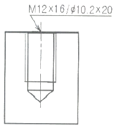
- 암나사 가공하기 위한 구멍가공 드릴지름은 12mm
- 암나사 가공하기 위한 구멍가공 드릴지름은 16mm
- 암나사 가공하기 위한 구멍가공 드릴지름은 10.2mm
- 암나사 가공하기 위한 구멍가공 드릴지름은 20mm
(정답률: 56%)
52. 기계제도에 사용되는 기호와 의미가 틀리게 설명된 것은?
- SR: 구의 지름
- R: 반지름
- C: 45° 모따기
- ø: 지름
(정답률: 64%)
53. 보기 도면과 같이 나타내는 단면도의 명칭은?
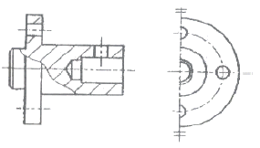
- 온 단면도
- 한쪽 단면도
- 부분 단면도
- 회전 단면도
(정답률: 33%)
54. 보기 입체도의 화살표 방향 투상도로 가장 적합한 것은?
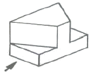
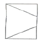
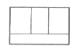
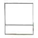
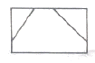
(정답률: 74%)
55. 보기와 같은 기계가공 도면에서 대가선 방향으로 가는 실선으로 교차하여 표시된 X부분의 설명으로 가장 적합한 것은?
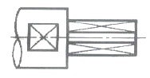
- 현장 끼워맞춤 표시한 곳
- 정밀하게 가공해야 할 곳
- 평면으로 가공해야 할 곳
- 사각구멍을 뚫어야 할 곳
(정답률: 65%)
56. 다음은 베어링 커버의 도면이다. 거칠기가 가장 거친 부분은?
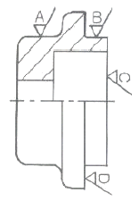
- A
- B
- C
- D
(정답률: 47%)
57. KS 기하 공차기호 중 진원도 공차기호는?
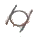
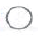
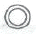
(정답률: 52%)
58. 기계 부품도에서 ø50H7g6로 표기된 끼워 맞춤의 설명이 틀리 것은?
- 억지 끼워 맞춤이다.
- 끼워 맞춤 구멍이 H7 등급이다.
- 끼워 맞춤 축이 g6 등급이다.
- 구멍 기준식 끼워 맞춤이다.
(정답률: 48%)
59. 보기 도면과 같은 제품을 드릴 지름 18mm로 구멍을 뚫을 때, 관통 구멍부인 플랜지의 두께 치수는?
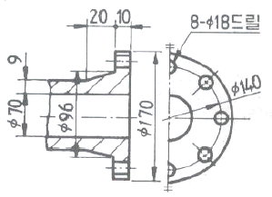
- 8
- 9
- 10
- 18
(정답률: 42%)
60. 구름베어링의 호칭 번호가 6420 C2 P6으로 표시된 경우 베어링 내경은 몇 mm인가?
- 42
- 64
- 100
- 420
(정답률: 59%)